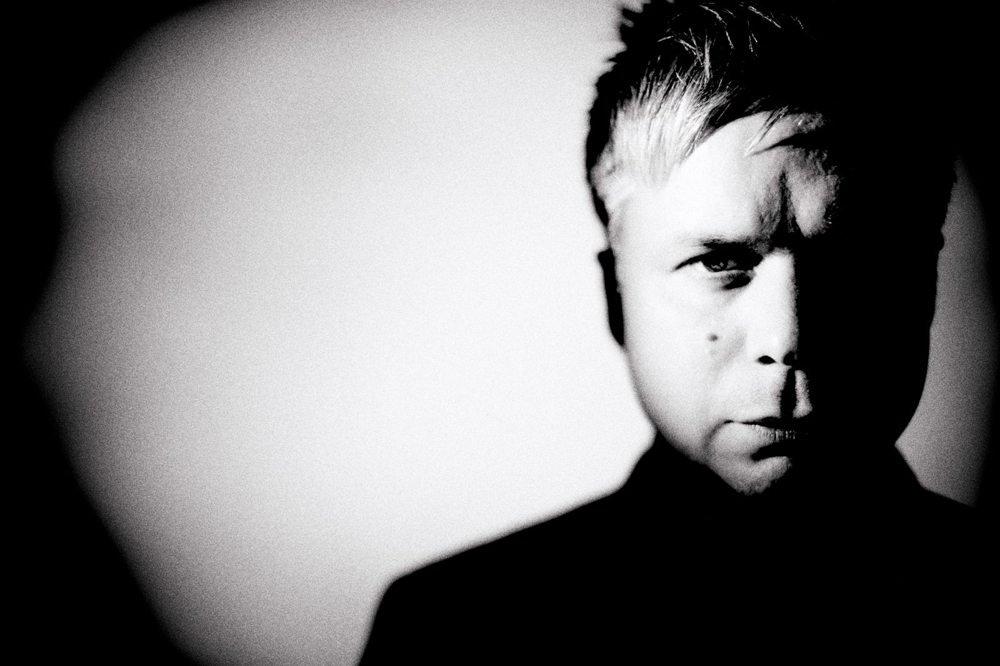
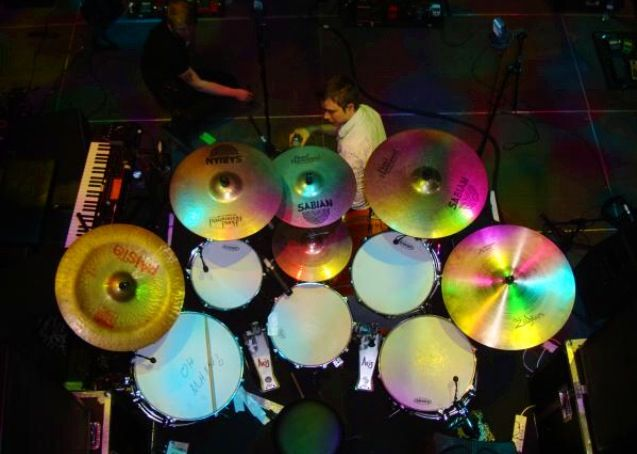

REEDICIÓN EN VINILO DE EFFLORESCE
Effloresce, el álbum debut de Oceansize de 2003 obtiene una reedición en vinilo remasterizado, hablamos con el líder Mike Vennart para preguntarle sobre la grabación de un clásico moderno.

Oceansize fue una banda británica de rock alternativo formada en Mánchester (Inglaterra) en 1998. Habiendo participado en giras con bandas como The Cooper Temple Clause, Cave In, People In Planes, Aereogramme, Mclusky, Biffy Clyro, Porcupine Tree y Serafín, se han mantenido fuera del mainstream musical de Mánchester, comenzando a ganar popularidad internacional.
Las influencias de la banda vienen principalmente de: Black Sabbath, Jane's Addiction, The Verve y Swervedriver, Pero también cuentan con influencias más artísticas como: Pink Floyd, Can, Tool, Tortoise, Mogwai y My Bloody Valentine.
Mike VennartVocalista y guitarrista, es uno de los principales compositores de Oceansize. Actualmente tiene un proyecto en solitario llamado Vennart y también es miembro de la banda Biffy Clyro. |
|
Mark HeronBatería de Oceansize, actualmente no está en ninguna banda pero sigue activo en redes sociales como instagram. |
|
 |
Steve DuroseGuitarrista y corista de Oceansize, actualmente forma parte de la banda Amplifier y colabora con el proyecto de Mike Vennart en solitario. |
GamblerRichard A. Ingram más conocido como Gambler, es el guitarrista de Oceansize. Actualmente forma parte de la banda Biffy Clyro y colabora con el proyecto de Mike Vennart en solitario. |
|
Steven HodsonBajista en Oceansize desde 2006, fué quien sustituyo a John Ellis, actualmente no forma parte de ninguna banda. |
Effloresce, el álbum debut de Oceansize de 2003 obtiene una reedición en vinilo remasterizado, hablamos con el líder Mike Vennart para preguntarle sobre la grabación de un clásico moderno.
El guitarrista de Biffy Clyro y Oceansize publicará su tercer albúm de estudio en solitario este año 2021.
Mark Heron el que fué batería de Oceansize ha vuelto a las redes sociales, después de una larga temporada sin tener noticias de él ha vuelto en Instagram colgando videos de ejercicios de rudimentos.
